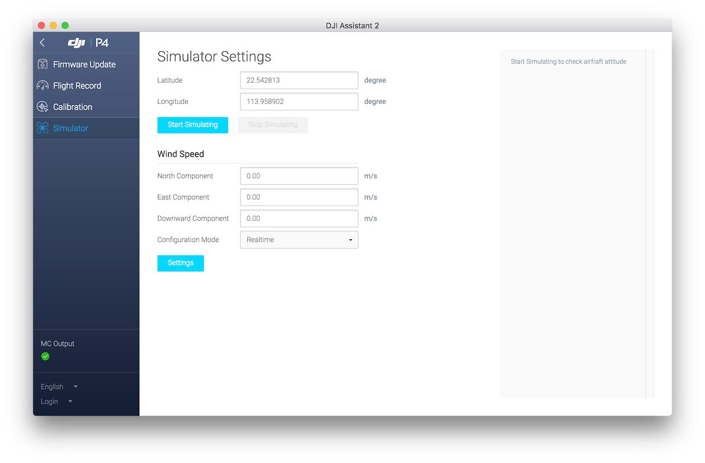

在模拟器中学习使用 Altizure (Mavic, P4, Inspire 2, M600 等)
支持机型
- Spark
- Mavic Pro
- Phantom 4 (4 / 4 Advanced / 4 Pro)
- Inspire 2
- M600, M200, M210 等
- A3, N3 等
支持的操作系统
- Windows
- macOS
1. 下载安装 DJI Assistant 2
前往 DJI 官方产品下载页, 找到软件栏, 下载并安装 DJI Assistant 2 调参软件。

2. 连接电脑与无人机
打开 DJI Assistant 2，开启无人机的电源，最好不要安装桨叶。用 USB 线连接无人机和电脑。


以下是 Phantom 4 连接后的截图：

3. 启动模拟器
点击左侧的“模拟器”, 输入你所在位置附近的经纬度, 点击“开始仿真”。

4. 试用 Altizure
连接手机和遥控，打开 Altizure。在 app 里找到无人机的位置（启动模拟器前输入的经纬度），在附近规划并开始一个新的航点任务。

其他技巧
- 这里有 DJI 官方教程介绍如何使用模拟器。
- 模拟器模式下也同样会拍摄照片，请在模拟结束后删除这些照片来释放 SD 卡的储存空间。
- 用鼠标可以拖动模拟器界面变更视角，用鼠标滚轮可以拉近或拉远。
- 右键点击模拟器界面, 点击 setup, 选中 show trace, 可以显示已飞过的航线。

该文档最后修改于 Sat May 19 2018 17:21:58 GMT+0800 (HKT)